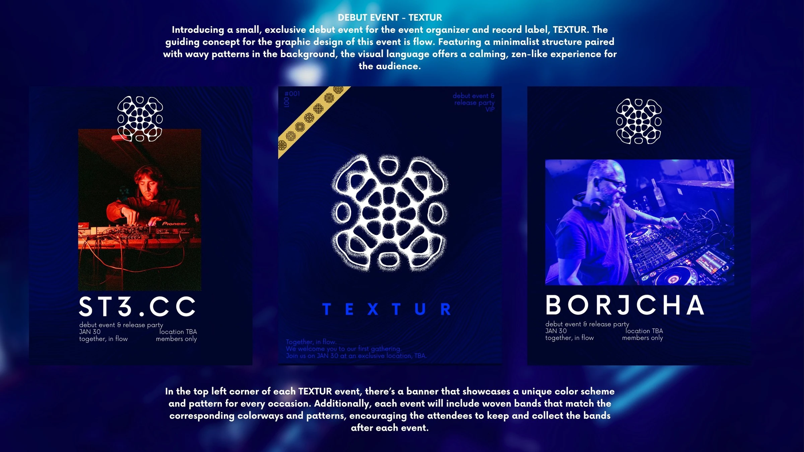
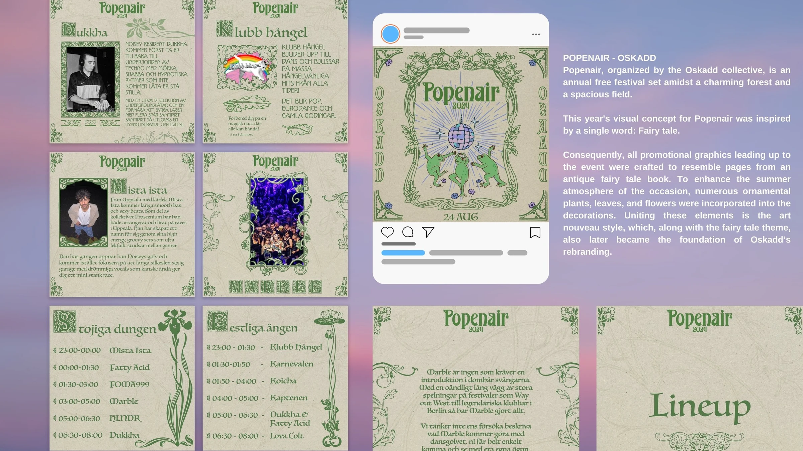

Graphic Design — Earlier Work / 02
Event & Festival Social Media Design
Instagram artwork for clubs, events and festivals.



Graphic Design — Earlier Work / 02
Instagram artwork for clubs, events and festivals.

